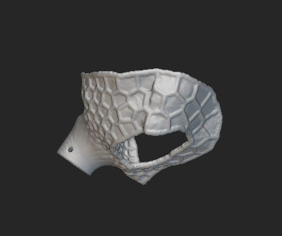
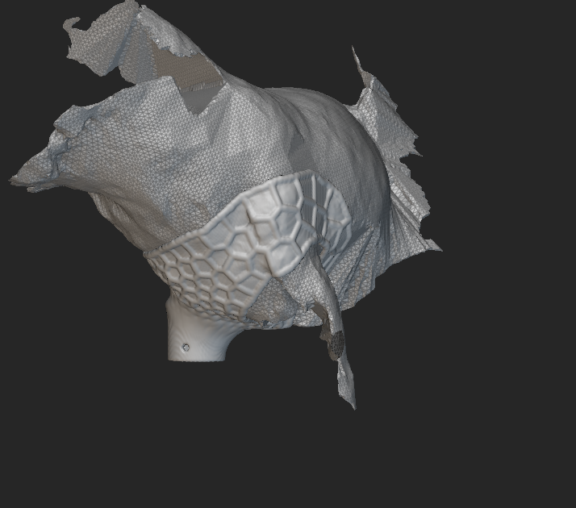
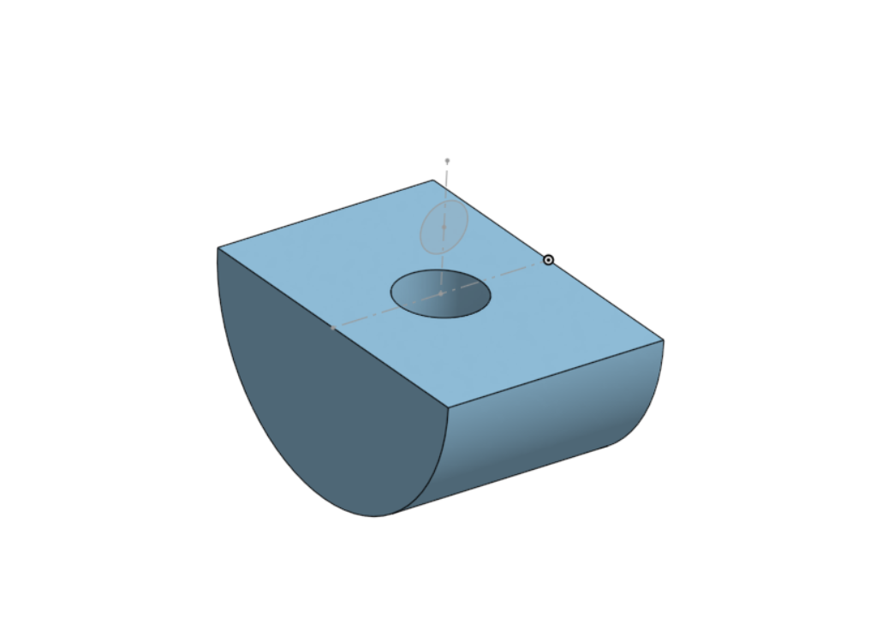

Ollie Case Study¶
- Age: 10
- Weight: 12 lbs
- Prosthetic: Full limb, front right
- Amputation: Full
- Reason: Mast cell tumor in 2022
- Goals: Long walks and better stability
Brief Summary of Animal Goals¶
Ollie is 10 years old, weighs 12 pounds, and lost his right thoracic limb due to a mast cell tumor in 2022. Since Ollie is a small dog, we want the prosthetic to be lightweight and allow for easy movement. The attachment system should have a wide contact area on the chest and leg to provide balance. It also needs to be stable and supportive to reduce stress on other joints, especially the left thoracic limb.
Materials¶
- Leg Stump: Hollow Aluminum Tube — Lightweight, easy to work with, and strong. This material should provide the stability that Ollie needs, as well as be light enough for him to use easily.
- Foot: TPU — Rubber-like flexibility, good ground traction, can compress to absorb impact. Honeycomb infill at 20-30% for bounce (as suggested by manufacturing expert).
- Harness: TPU + Velcro Straps — TPU with fuller infill (30-40%) should be strong enough to support Ollie while also being flexible enough to not cause discomfort. Velcro straps to attach the harness to Ollie will make it user friendly for the owner.
- Harness Lining: EVA Foam — Commonly used in prosthetics to add comfort and shock absorption, and easily accessible online. The inside of the harness will be sanded and adhesive added to the foam to connect it.
3D-Print Files¶



Iteration in Design Process and Challenges Faced¶
We found that the prototype had gaps around Ollie's body, making it difficult for him to adjust to and less comfortable. We also noticed that we needed to make the hole for the remaining leg more circular and smooth to prevent chafing and pokey spots. We needed to reduce the diameter of the attachment part on the harness and cut down the aluminum tube to the proper height of 14.5 cm. Lastly, we needed to fatten the foot shape for a more natural gait and make the harness holes more rectangular for velcro attachment. Importantly, the prototypes were printed in PETG to preserve the amount of TPU we have; final products will be printed in TPU.
Assembly of Full Design¶
To assemble the full design, the aluminum rod will be inserted into the foot and secured with a two-part epoxy glue, and the other side will be inserted into the attachment slot in the harness. The inside of the harness will be lined with EVA foam for additional comfort. The holes on the harness will be used to secure the velcro attachment and hold the entire prosthetic around Ollie's body.
Referenced Papers/Sources¶
- Yang, Shuna et al. "Clinical Application of 3D Printing Technology in the Production of Canine Full Limb Prosthetics." Veterinary Medicine International vol. 2025 9052033. 15 Dec. 2025, doi:10.1155/vmi/9052033.
- Goldner, B et al. "Kinematic adaptations to tripedal locomotion in dogs." Veterinary Journal (London, England : 1997) vol. 204,2 (2015): 192-200. doi:10.1016/j.tvjl.2015.03.003
- The Future of Prosthetics in Veterinary Care — Carrington College